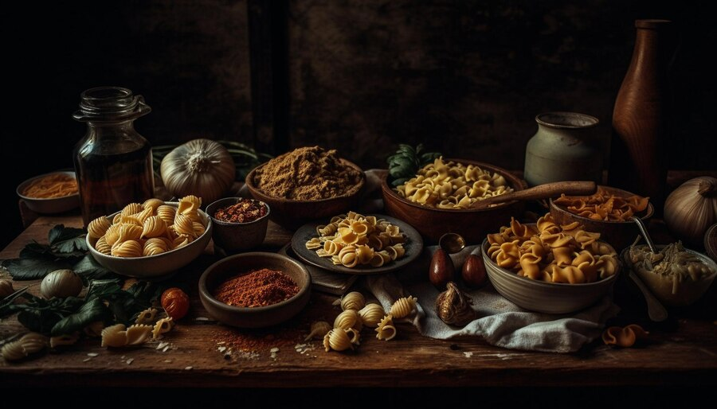

Our History
FlavourBites started its journey in 2005 with a small team of passionate food enthusiasts.
Our founder, John Smith, envisioned a place where people could experience unique flavors.
In the early years, we operated as a small café serving homemade baked goods and coffee.
As our popularity grew, we expanded our menu to include a variety of international cuisines.
In 2010, we opened our first flagship restaurant in the heart of the city.
This marked a significant milestone in our journey towards becoming a renowned culinary destination.
Over the years, we've continued to innovate and experiment with flavors and ingredients.
In 2015, we launched our online platform, allowing customers to order our dishes from the comfort of their homes.
The same year, we received the prestigious "Best New Restaurant" award from Foodie Magazine.
In 2018, we introduced our line of signature sauces and spices, which quickly became customer favorites.
Our commitment to quality and authenticity has earned us a loyal following of food enthusiasts.
In 2020, despite the challenges posed by the pandemic, we adapted our operations and introduced contactless delivery options.
This allowed us to continue serving our customers safely while supporting our staff and suppliers.
In 2021, we expanded our reach by partnering with local farmers and producers to source the freshest ingredients.
This initiative not only enhanced the quality of our dishes but also supported sustainable agriculture.
Today, FlavourBites is known for its innovative approach to cuisine and dedication to customer satisfaction.
We strive to create memorable dining experiences for our guests, whether they're dining in our restaurants or ordering takeout.
Our team of chefs and culinary experts are constantly exploring new techniques and flavor combinations.
We're proud to be a part of the vibrant food scene in our community and beyond.
Looking ahead, we're excited to continue pushing the boundaries of culinary excellence and delighting our customers.
Our commitment to quality and innovation remains unwavering as we embark on the next chapter of our journey.
We're grateful to our loyal customers for their continued support and enthusiasm.
Without them, FlavourBites wouldn't be where it is today.
As we reflect on our past achievements, we're inspired to dream even bigger and reach new heights.
Our mission is to inspire passion for food and create unforgettable culinary experiences for generations to come.
From our humble beginnings to our present success, our story is a testament to the power of passion and perseverance.
We're grateful for the opportunity to share our love of food with the world and look forward to many more years of culinary excellence.
Thank you to everyone who has been a part of our journey – here's to the next delicious chapter!
Join us as we continue to explore new flavors, celebrate diverse cuisines, and create lasting memories.
Welcome to FlavourBites – where every bite tells a story.

Our Achievements
FlavourBites offers a comprehensive range of culinary services designed to tantalize the taste buds and create memorable dining experiences for our customers. At the heart of our offerings is our diverse menu, which features an array of mouthwatering dishes inspired by cuisines from around the world. Whether you're craving comforting classics or bold, innovative flavors, we have something to satisfy every palate.Our commitment to quality extends beyond our ingredients to every aspect of the dining experience. From the moment you step into one of our restaurants, you'll be greeted by warm, welcoming ambiance and attentive service. Our knowledgeable staff are passionate about food and are dedicated to ensuring that every meal is a delight from start to finish.
In addition to our dine-in options, we also offer convenient takeout and delivery services, allowing you to enjoy our delicious fare wherever you are. Whether you're hosting a dinner party at home or need a quick and satisfying meal on the go
, FlavourBites has you covered.
Our Services
At FlavourBites, we pride ourselves on delivering an exceptional array of services tailored to meet the diverse culinary needs and desires of our valued customers. With a commitment to excellence and innovation, we strive to exceed expectations and create unforgettable dining experiences for all who walk through our doors.
Dining Experience: Step into our inviting restaurants and indulge in a culinary journey filled with a rich tapestry of flavors, textures, and aromas. Menu Variety: Explore our diverse menu featuring an eclectic mix of dishes inspired by global cuisines, from traditional favorites to modern interpretations. Quality Ingredients: We source only the freshest, highest-quality ingredients to ensure that every dish we serve is bursting with flavor and nutritional goodness. Expert Craftsmanship: Our team of skilled chefs brings passion and expertise to the kitchen, crafting each dish with care and precision to deliver unparalleled taste and presentation. Personalized Service: Experience warm hospitality and attentive service from our knowledgeable staff who are dedicated to making your dining experience truly memorable. Takeout & Delivery: Enjoy the convenience of our takeout and delivery services, bringing our delicious fare straight to your doorstep for enjoyment in the comfort of your home. Cooking Classes: Hone your culinary skills with our hands-on cooking classes led by our talented chefs, offering instruction in a variety of cuisines and techniques. Culinary Events: Join us for special culinary events and workshops designed to inspire creativity, foster community, and celebrate the joy of food. Private Dining: Host intimate gatherings, corporate events, or special occasions in our elegant private dining spaces, tailored to meet your specific needs and preferences. Catering Services: Elevate your next event with our professional catering services, offering custom menus and impeccable service for weddings, parties, and corporate functions. Dietary Accommodations: We cater to a variety of dietary preferences and restrictions, offering vegetarian, vegan, gluten-free, and other options to accommodate all guests. Beverage Selection: Complement your meal with our carefully curated selection of wines, beers, cocktails, and non-alcoholic beverages, chosen to enhance your dining experience. Seasonal Specials: Discover seasonal menus featuring the freshest ingredients of the moment, showcasing the best flavors each season has to offer. Culinary Tours: Embark on culinary adventures with our guided tours of local markets, farms, and foodie hotspots, immersing yourself in the vibrant food culture of our region. Chef's Table Experience: Indulge in a unique dining experience with our Chef's Table service, where you'll enjoy an exclusive, multi-course meal prepared and presented by our head chef. Corporate Partnerships: Build stronger teams and foster connections with our corporate partnership programs, offering team-building events, lunch-and-learn sessions, and more. Sustainability Initiatives: We're committed to sustainability and environmental stewardship, sourcing local ingredients, reducing waste, and supporting eco-friendly practices. Community Engagement: We're proud to be active members of our local community, supporting charitable initiatives, sponsoring events, and giving back to those in need. Culinary Consultation: Tap into our expertise with culinary consultation services, offering menu development, kitchen design, and operational guidance for restaurants and hospitality businesses. Online Ordering: Streamline your ordering process with our convenient online ordering platform, allowing you to browse menus, place orders, and track deliveries with ease. Recipe Development: Let our culinary experts help you bring your culinary visions to life with custom recipe development services tailored to your taste preferences and dietary needs. Food Pairing Experiences: Explore the art of food and beverage pairing with our guided tasting experiences, featuring expertly curated combinations that showcase the harmony of flavors. Cooking Demonstrations: Learn new culinary techniques and tips with our cooking demonstrations, where our chefs share their secrets for creating delicious dishes at home. Culinary Retreats: Escape to picturesque destinations and immerse yourself in the world of food and wine with our culinary retreats, featuring cooking classes, wine tastings, and more. Specialty Menus: Celebrate holidays, cultural traditions, and special occasions with our themed specialty menus, offering unique dishes and festive flavors to mark the occasion. Food Photography Workshops: Capture the beauty of food with our food photography workshops, where you'll learn techniques for styling and photographing dishes like a pro. Cooking Equipment Rentals: Host your own culinary events or gatherings with ease with our cooking equipment rental services, offering a range of appliances and tools for rent. Menu Consulting: Enhance the appeal and profitability of your restaurant with our menu consulting services, providing insights and recommendations for menu design and pricing. Wine Education: Expand your knowledge and appreciation of wine with our wine education classes and tastings, led by certified sommeliers and wine experts. Customer Loyalty Program: Join our loyalty program and enjoy exclusive perks, discounts, and rewards as a valued member of the FlavourBites community.
Our Ingredients Spotlight
At FlavourBites, we believe that exceptional cuisine starts with exceptional ingredients. We take great pride in sourcing the finest and freshest ingredients available, carefully selected to ensure the highest quality and flavor in every dish we create.

Fresh Produce: We source locally grown fruits and vegetables, harvested at the peak of ripeness to deliver optimal flavor and nutrition. Premium Meats: Our meats come from trusted suppliers known for their commitment to ethical farming practices and superior quality standards. Sustainable Seafood: We prioritize sustainable seafood options, working with suppliers who adhere to responsible fishing practices to protect our oceans and marine life. Artisanal Cheeses: Discover a selection of artisanal cheeses, handcrafted by skilled cheesemakers using traditional methods for exceptional taste and texture. Organic Ingredients: Whenever possible, we choose organic ingredients free from synthetic pesticides and chemicals, supporting both environmental sustainability and human health. Herbs and Spices: Elevate your dishes with our extensive array of herbs and spices, sourced from around the world for their distinct flavors and aromatic qualities. Specialty Flours: Explore a variety of specialty flours, including whole grain, gluten-free, and ancient grain options, to accommodate diverse dietary preferences and needs. Handpicked Seasonings: Our chefs meticulously handpick seasonings and flavorings to enhance the taste profile of each dish, ensuring a harmonious balance of flavors. Locally Sourced Honey: Sweeten your recipes with locally sourced honey, harvested from nearby apiaries for its pure, unadulterated sweetness and floral notes. Farm-Fresh Eggs: Enjoy farm-fresh eggs from free-range chickens, known for their vibrant yolks and rich, flavorful taste.
Specialty Oils and Vinegars: Enhance your cooking with our selection of specialty oils and vinegars, including extra virgin olive oil, aged balsamic vinegar, and infused varieties for added depth of flavor. Aromatic Coffee Beans: Wake up your senses with our aromatic coffee beans, carefully roasted to perfection for a rich, smooth cup of coffee with every sip. Exotic Fruits: Indulge in the exotic flavors of tropical fruits sourced from around the globe, including mangoes, papayas, pineapples, and more. Heirloom Tomatoes: Experience the unparalleled taste of heirloom tomatoes, prized for their vibrant colors, complex flavors, and juiciness. Artisanal Bread: Savor the irresistible aroma and texture of artisanal bread, crafted by skilled bakers using traditional techniques and premium ingredients. Nutritious Grains: Incorporate nutritious grains like quinoa, farro, and bulgur into your diet for added fiber, protein, and essential nutrients. Culinary Mushrooms: Delight your taste buds with a variety of culinary mushrooms, prized for their earthy flavors and versatility in a wide range of dishes. Specialty Meats: Explore our selection of specialty meats, including grass-fed beef, heritage pork, and game meats, for a unique and flavorful dining experience. Handcrafted Pastas: Indulge in handcrafted pastas made with premium semolina flour and fresh eggs, offering a delicate texture and rich flavor in every bite. Gourmet Nuts and Seeds: Add crunch and nutrition to your recipes with our selection of gourmet nuts and seeds, including almonds, walnuts, pumpkin seeds, and more.
Exotic Spices: Discover the exotic flavors of spices from around the world, including saffron, cardamom, sumac, and smoked paprika, for a culinary adventure in every dish. Specialty Salts: Elevate your dishes with our selection of specialty salts, including Himalayan pink salt, sea salt flakes, and flavored varieties for added complexity. Fresh Dairy Products: Enjoy the creamy goodness of fresh dairy products, including milk, cream, butter, and yogurt, sourced from local farms for superior taste and quality. Indigenous Ingredients: Celebrate the culinary heritage of our region with indigenous ingredients sourced from local farmers and producers, showcasing the unique flavors of our land. Exquisite Chocolates: Indulge your sweet tooth with our collection of exquisite chocolates, crafted from premium cocoa beans and infused with a variety of flavors and fillings. Aromatic Teas: Relax and unwind with our selection of aromatic teas, sourced from the finest tea estates around the world for their exceptional quality and flavor. Flavorful Broths: Enhance the depth and complexity of your soups, stews, and sauces with our flavorful broths, simmered to perfection with a blend of herbs, spices, and vegetables. Specialty Vinegars: Add brightness and acidity to your dishes with our selection of specialty vinegars, including apple cider vinegar, red wine vinegar, and rice vinegar. Exotic Juices: Quench your thirst with our exotic juices made from fresh fruits and vegetables, offering a refreshing burst of flavor and natural goodness. Seasonal Produce: Embrace the flavors of the season with our selection
of seasonal produce, including crisp apples, juicy berries, heirloom squash, and more, sourced at the peak of freshness.